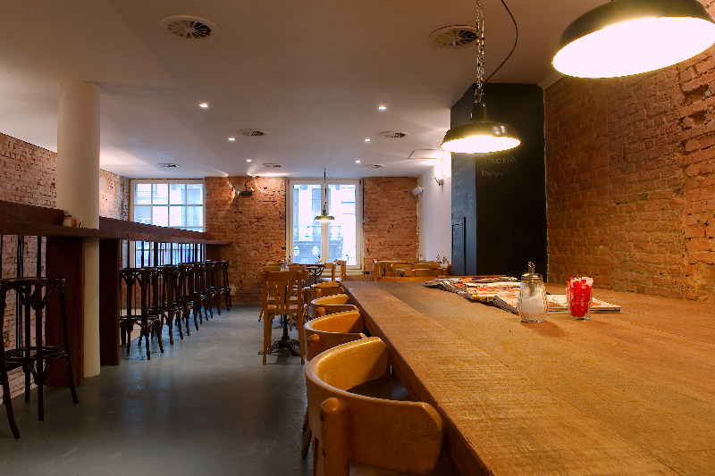

cafe・ド・リシャス
新宿三丁目の憩いの場所として、cafe・ド・リシャスは2018年1月にオープンいたしました。店内が大きく、団体専用テーブルも用意しているので団体のお客様も気軽に来店することができます。また、カフェでは珍しい個室を設置しているので会社の打ち合わせなどにも最適です。cafe・ド・リシャスでは、セルフサービスも行っているので自分好みの味にすることができます。もちろん任意ですので、お店おすすめの味をそのまま楽しむこともできます。

Mon - Fri: 07.30 — 22.30
Saturday: 09.00 — 22.30
Sunday: 09.00 — 16.00
Bar: Open Mon - Sat till late
新宿三丁目の憩いの場所として、cafe・ド・リシャスは2018年1月にオープンいたしました。店内が大きく、団体専用テーブルも用意しているので団体のお客様も気軽に来店することができます。また、カフェでは珍しい個室を設置しているので会社の打ち合わせなどにも最適です。cafe・ド・リシャスでは、セルフサービスも行っているので自分好みの味にすることができます。もちろん任意ですので、お店おすすめの味をそのまま楽しむこともできます。